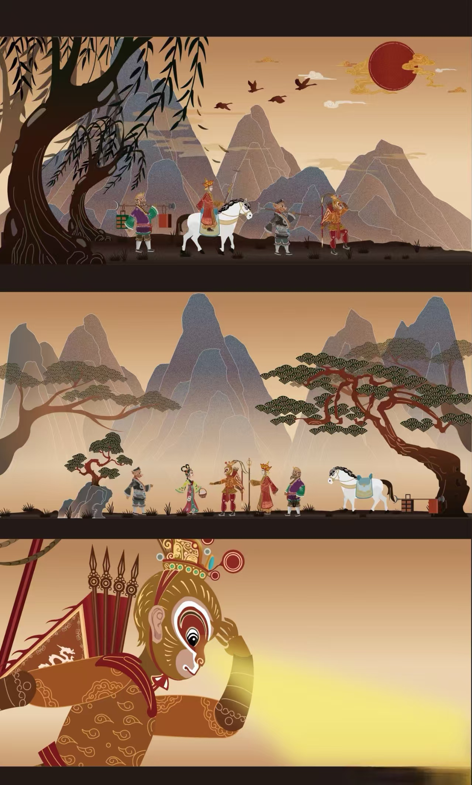
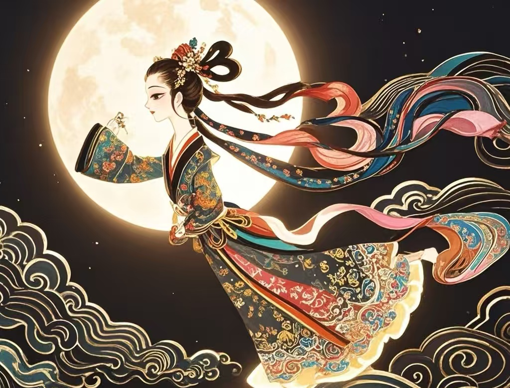
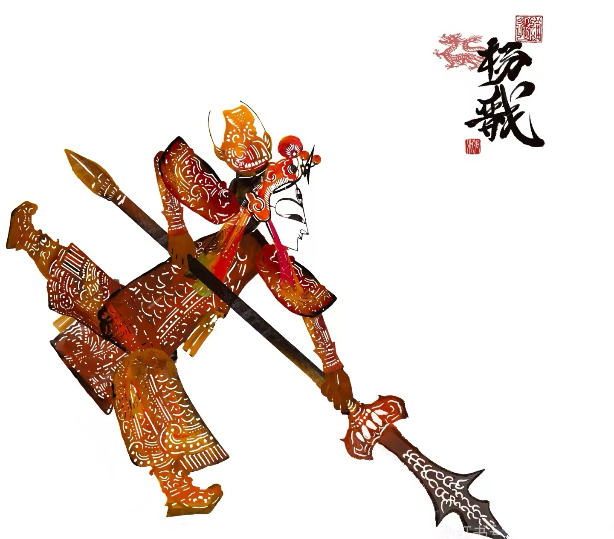
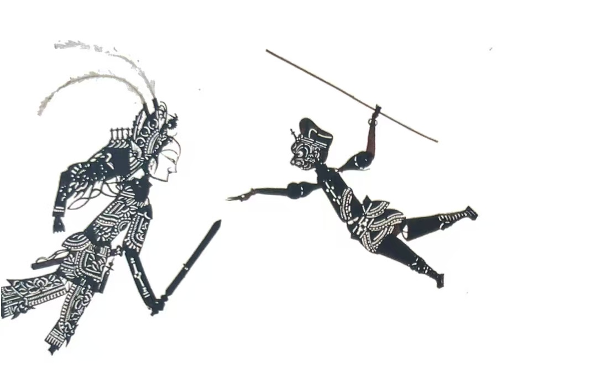
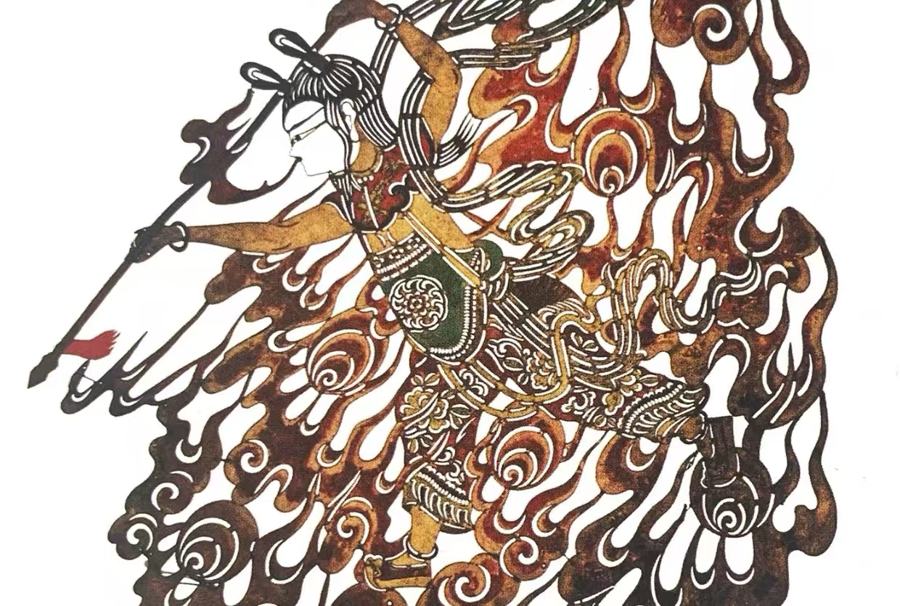
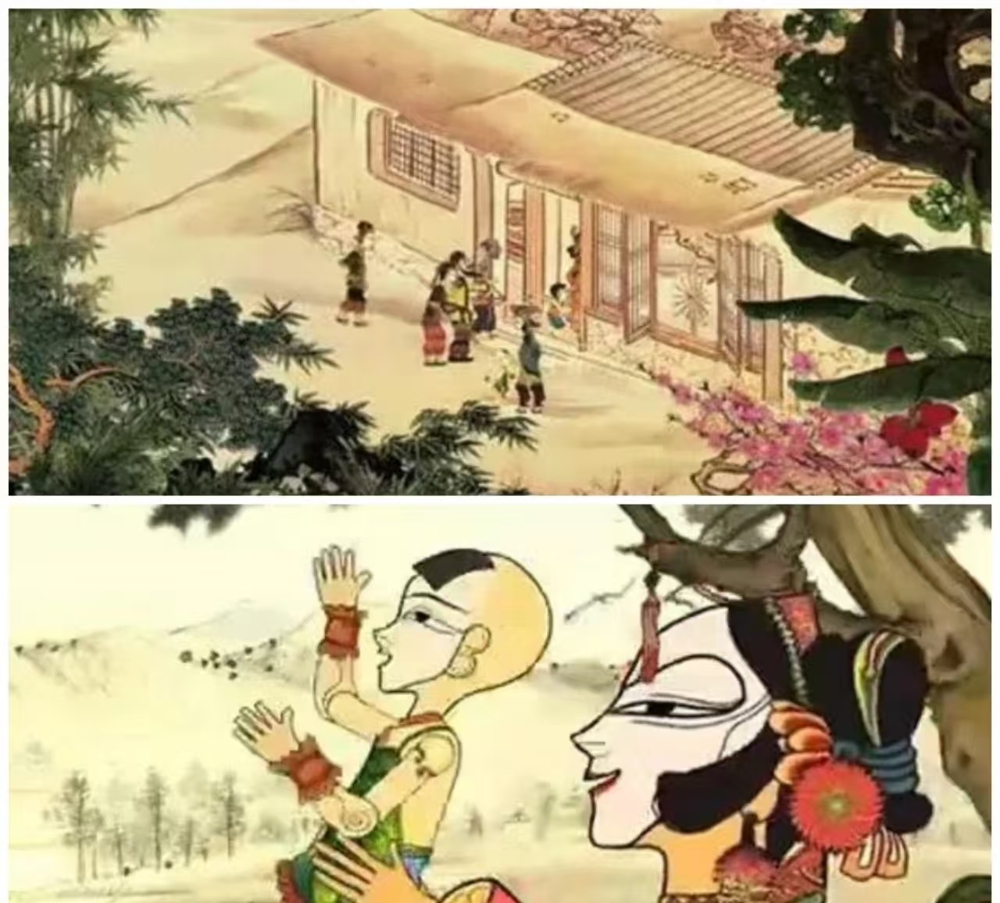
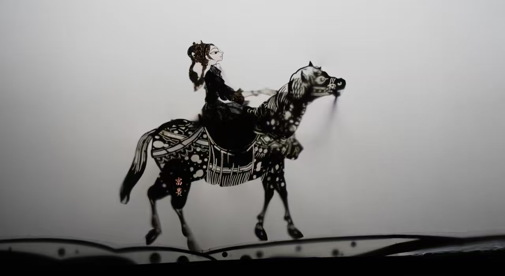
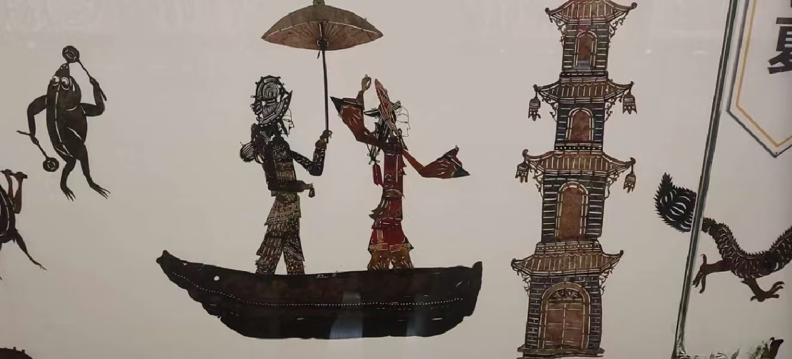
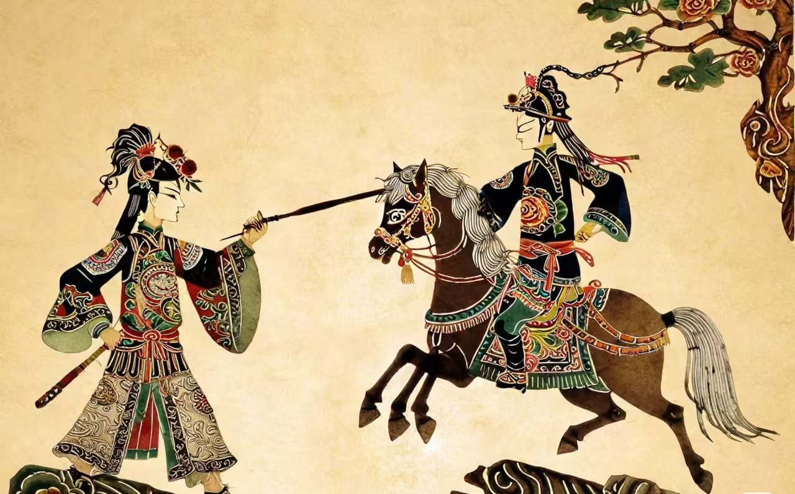
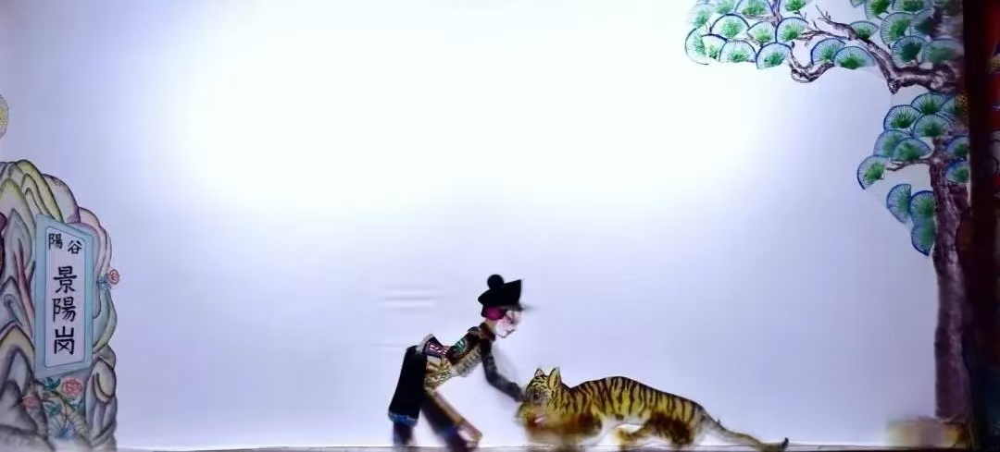

湖湘皮影戏有着丰富的剧目，这些作品反映了湖南地区的历史文化和民间风情

神话传说剧
讲述了嫦娥偷吃仙药飞上月球的神话故事。该剧在视觉表现上独具特色，通过巧妙的光影效果，展现了月亮、云彩等奇幻场景。
该剧在湖湘皮影戏中占有重要地位，各地皮影戏班都有不同版本的演绎，音乐采用湖南花鼓戏的曲调，具有浓郁的地方特色。

历史神话剧
《封神演义》是根据中国古典名著改编的皮影戏，讲述了商周时期姜子牙辅佐周武王伐纣的故事。
湖湘皮影戏《封神演义》以其精美的影人造型和精彩的武打场面著称，剧中的神仙、妖魔形象各异，栩栩如生。

古典名著改编剧
《西游记》是湖湘皮影戏中最受欢迎的剧目之一，改编自吴承恩的同名小说，讲述了唐僧师徒西天取经的故事。
该剧在表演中充分发挥了皮影戏的特长，通过巧妙的操纵，表现出孙悟空的七十二变、腾云驾雾等奇幻场景。

现代生活剧
改编自《封神演义》中的哪吒故事，讲述了哪吒大闹东海、剔骨还父等经典情节。该剧造型可爱，情节生动，深受儿童观众喜爱。
该剧语言生动幽默，充满了湖南地方特色，通过生活化的情节，展现了集体主义精神和农村的新风尚。

古典文学改编剧
《桃花源记》根据东晋文学家陶渊明的同名散文改编，讲述了一个渔民偶然发现世外桃源的故事。
湖湘皮影戏《桃花源记》以其优美的画面和诗意的表现手法，展现了湖南地区的自然风光和人文情怀，具有很高的艺术价值。

古代历史剧
该剧以传统皮影技艺演绎花木兰女扮男装、替父从军的经典故事。其特点在于创新性地融合多媒体技术，以水墨动画风格营造沉浸式舞台效果，并引入象征精神守护的全新角色。
全剧通过精雕细琢的影人造型、行云流水的武打动作设计，以及传统乐器与现代视觉艺术的交融，生动展现巾帼英雄的忠勇与家国情怀。

神话爱情剧
《白蛇传》是中国四大民间传说之一，讲述了白蛇白素贞与许仙之间的爱情故事。湖湘皮影戏《白蛇传》以其精美的造型和细腻的表演，生动展现了这个动人的爱情故事。

历史战争剧
根据古典名著《三国演义》改编的皮影戏，选取了桃园结义、赤壁之战等经典情节，通过皮影的形式展现了三国时期的英雄人物和历史事件。

英雄故事剧
取材于《水浒传》，讲述了武松在景阳冈打死老虎的故事。湖湘皮影戏《武松打虎》以其精彩的武打场面和夸张的动作设计，深受观众喜爱。